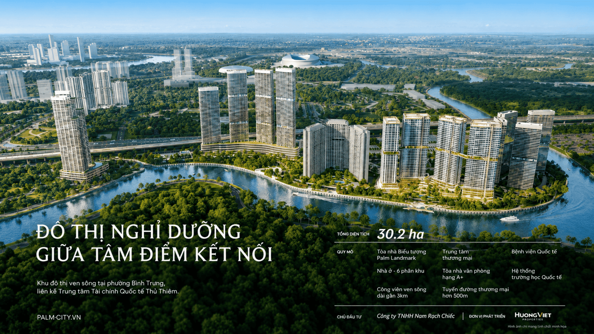
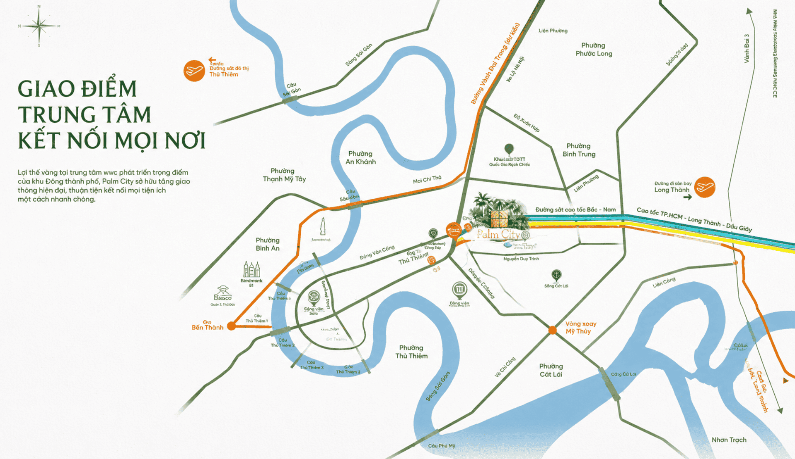
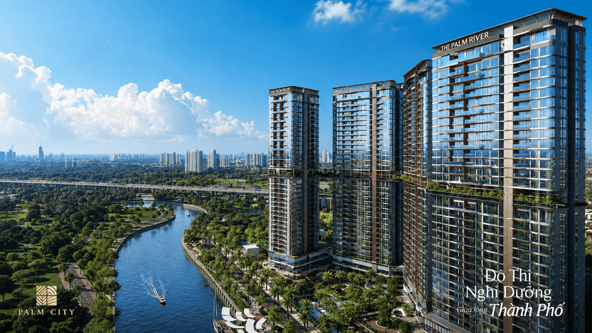
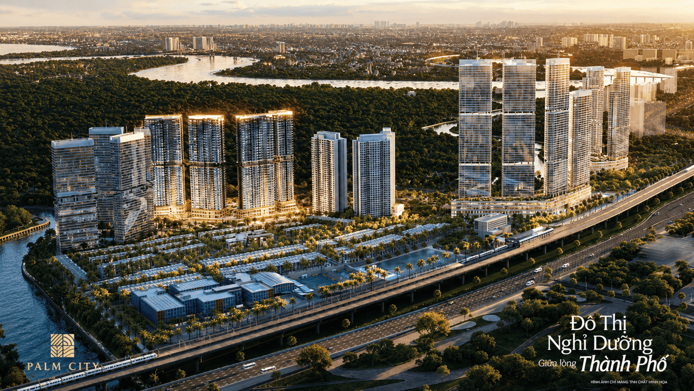
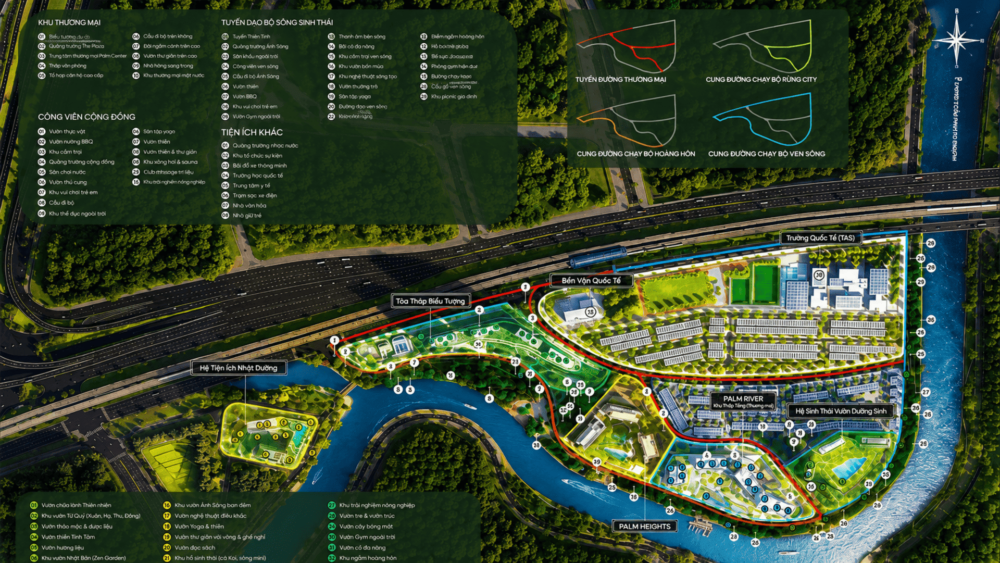
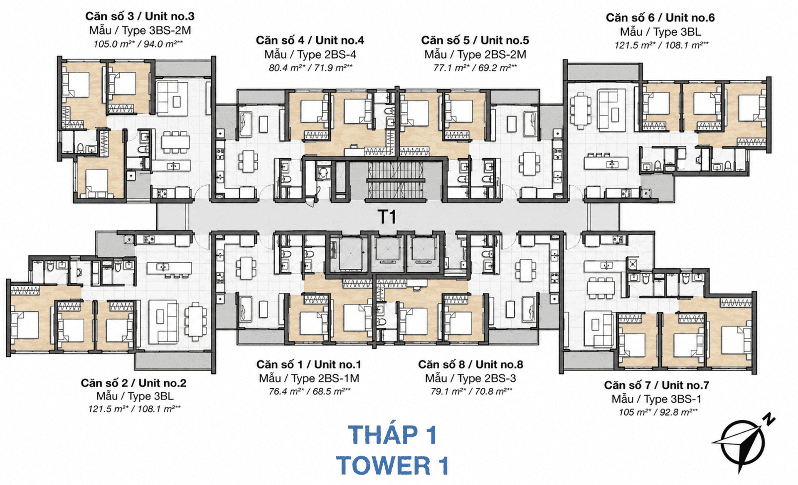
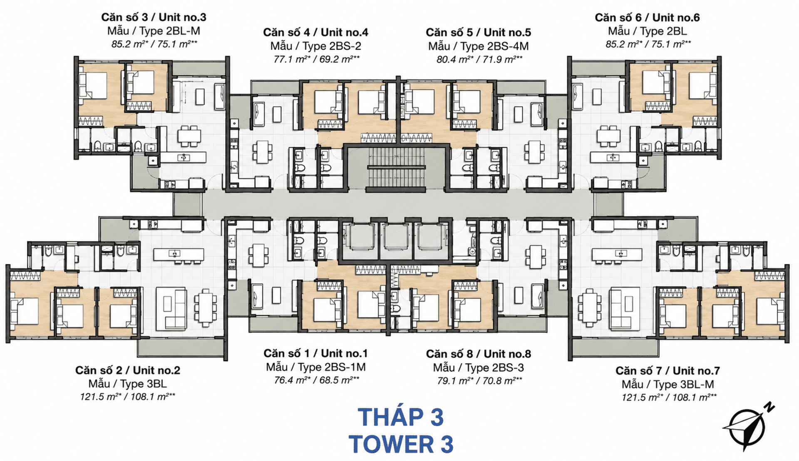
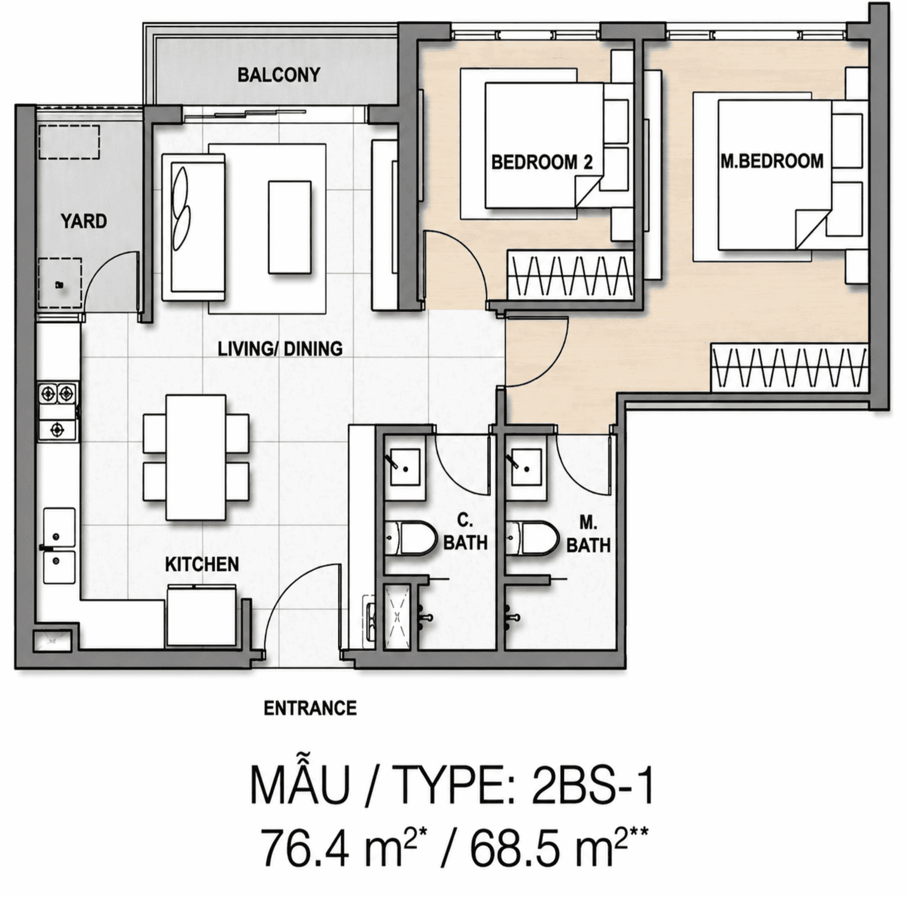
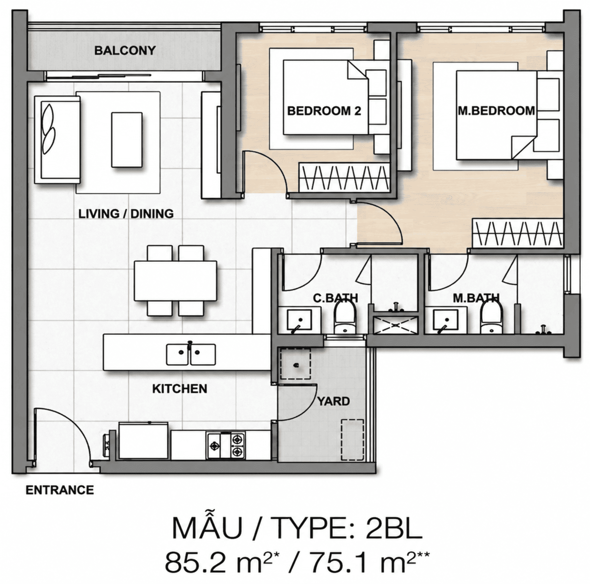
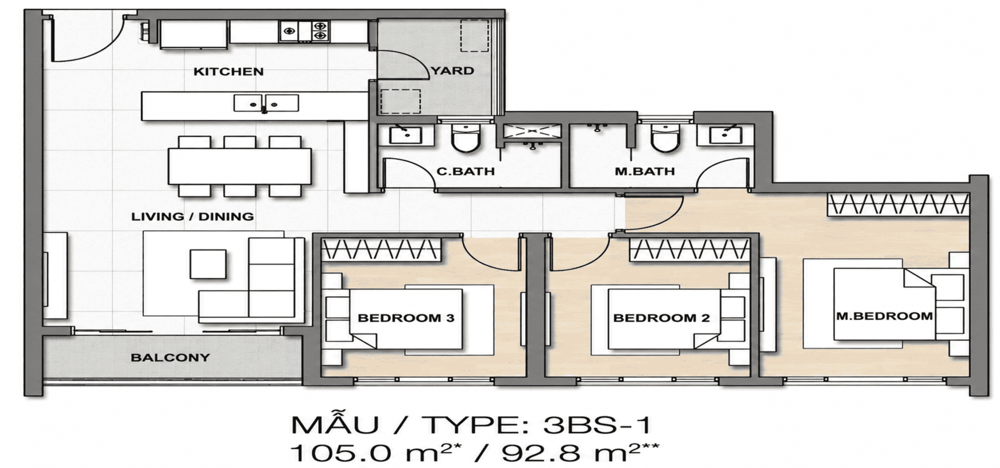

Palm River (Palm City, Thủ Đức): giá rao khoảng 139,1 triệu/m² có hợp lý không?

1. Tóm tắt nhanh
≈ 5.340 USD/m²
≈ 4.330 USD/m²
Mức: cao nếu mua đúng giá rao
Với căn 2 phòng ngủ mẫu 2BL (75,1 m² thông thủy), giá rao tương ứng 10,4 tỷ đồng, trong khi giá hợp lý khoảng 8,5 tỷ đồng, tức chênh khoảng 2,0 tỷ. Nếu chủ đầu tư áp dụng chiết khấu tối đa 16,5% như một số môi giới quảng cáo, giá còn 116,1 triệu/m² (8,7 tỷ), chênh khoảng +3,0%, tức nằm trong vùng hợp lý. Mức chiết khấu cần có để giá chỉ cao hơn giá hợp lý 5% là khoảng 14,9%.
2. Vị trí
Palm River nằm trong khu đô thị Palm City (khu dân cư Nam Rạch Chiếc), phường Bình Trưng (khu Quận 2 cũ), TP. Thủ Đức, mặt trục Song Hành và giáp sông Giồng Ông Tố ba phía. Dự án gần tuyến Mai Chí Thọ, cao tốc TP.HCM – Long Thành – Dầu Giây và Metro số 1. Nút giao An Phú và các tuyến mở rộng vẫn đang triển khai, không nên coi là tiện ích đã hoàn thành.

3. Sản phẩm
| Hạng mục | Thông tin |
|---|---|
| Chủ đầu tư / phát triển | Hướng Việt Properties (pháp nhân: Công ty TNHH Nam Rạch Chiếc theo batdongsan.com.vn) |
| Quy mô | Khoảng 1,9 ha; 4 tòa, 35–36 tầng (nguồn ghi khác nhau); 620 căn hộ; số shophouse và officetel ghi khác nhau giữa các nguồn (13 hoặc 117 shophouse; 71 officetel) |
| Mật độ xây dựng | Nguồn ghi 25%, 39% và khoảng 40%. Chưa thống nhất, cần đối chiếu hồ sơ quy hoạch 1/500 |
| Loại hình | Studio, 1–3 phòng ngủ, duplex, penthouse; 1 chỗ ô tô/căn |
| Tiến độ | Khởi công 16/06/2026; dự kiến bàn giao quý I/2029 |
Điểm nhấn theo giới thiệu thị trường: 100% căn góc, mật độ 4–6 căn/sàn, tiện ích tầng 20. Các tiện ích này mới là kế hoạch, chưa vận hành.



Mặt bằng tầng và căn hộ
Tài liệu đăng trên palmcity.vn gồm mặt bằng tầng điển hình của Tháp 1 và Tháp 3 (8 căn/tầng) cùng các mẫu căn hộ. Mỗi mẫu ghi hai diện tích: dấu * là tim tường, dấu ** là thông thủy. Bảng bên dưới tổng hợp các mẫu thấy trên mặt bằng.
| Mẫu | Tim tường (m²) | Thông thủy (m²) |
|---|---|---|
| 2BS-1M | 76,4 | 68,5 |
| 2BS-2 / 2BS-2M | 77,1 | 69,2 |
| 2BS-3 | 79,1 | 70,8 |
| 2BS-4 / 2BS-4M | 80,4 | 71,9 |
| 2BL / 2BL-M | 85,2 | 75,1 |
| 3BS-1 | 105,0 | 92,8 |
| 3BS-2M | 105,0 | 94,0 |
| 3BL / 3BL-M | 121,5 | 108,1 |





4. Kiểm tra giá và so sánh
Palm River chưa có bảng giá chính thức. Giá rao khoảng 112–170 triệu/m² cho căn 2PN, trung vị 139,1 triệu/m² (10 tin sau khi loại tin trùng). Hai dự án đối chiếu đều đã bàn giao:
| Dự án | Số tin | Trung vị giá rao | Giá thị trường (×0,95) | A | Giá điều chỉnh |
|---|---|---|---|---|---|
| Lumière Riverside (Thảo Điền) | 13 | 157,2 | 149,4 | +10% | 134,4 |
| Palm Heights (Palm City) | 9 | 98,7 | 93,7 | +3% | 90,9 |
| Giá hợp lý | 113 |
Lưu ý về độ lệch. Hai giá điều chỉnh chênh nhau rất lớn (134,4 so với 90,9), vì một dự án ở Thảo Điền còn dự án kia cùng khu Palm City nhưng đã khoảng 10 năm tuổi. Palm River nằm giữa hai mốc này nên chúng tôi giữ nguyên cả hai và dùng trung bình, thay vì chọn lại đối chiếu. Kết luận vì vậy có biên sai số lớn.
Bảng điều chỉnh chi tiết
| Yếu tố | Lumière | Palm Heights | Căn cứ |
|---|---|---|---|
| Khoảng cách tới CBD | +5 | 0 | Thảo Điền gần trung tâm hơn khu Nam Rạch Chiếc; Palm Heights cùng khu với Palm River |
| Giao thông | 0 | 0 | Cùng nằm gần tuyến Metro số 1 và trục Mai Chí Thọ; chưa phân biệt bậc |
| Quy mô đô thị | −5 | 0 | Palm River nằm trong Palm City (~30 ha); Lumière đứng riêng |
| Tiện ích khu vực | +5 | 0 | Hệ sinh thái Thảo Điền đầy đủ hơn khu Nam Rạch Chiếc |
| Uy tín chủ đầu tư | +5 | +5 | Masterise và Keppel Land có hồ sơ lâu năm hơn Hướng Việt |
| Pháp lý / tài chính (checklist) | +8 | +8 | Hai dự án đã bàn giao, có sổ hồng; Palm River mới khởi công 16/06/2026. Các mục khác chưa kiểm chứng nên tính 0 |
| Mặt bằng / tiện ích nội khu | −5 | −5 | Palm River: 100% căn góc, 4–6 căn/sàn, 3 mặt giáp sông (theo giới thiệu thị trường) |
| Tuổi công trình | −3 | −5 | Chênh tuổi nhận nhà: Lumière ~6 năm, Palm Heights ~10 năm; 1 điểm % mỗi 2 năm |
| Quy mô dự án | 0 | 0 | Chưa đặt ngưỡng; tạm tính 0 |
| View | 0 | 0 | Chưa chuẩn hóa định nghĩa; tạm tính 0 |
| Tổng điều chỉnh (A) | +10% | +3% | Dấu + nghĩa là đối chiếu tốt hơn Palm River |
5. Kiểm tra nguồn cung & pháp lý
- Danh sách dự án đủ điều kiện bán nhà hình thành trong tương lai (Sở Xây dựng): chưa kiểm chứng.
- Bảo lãnh ngân hàng, hình thức sở hữu, hạn mức người nước ngoài: chưa kiểm chứng.
- Giấy phép xây dựng và quy hoạch 1/500: chưa đọc được văn bản; mật độ đang có số liệu mâu thuẫn.
- Các mục chưa kiểm chứng được tính 0 trong mô hình. Nếu sau này kết quả xấu, giá hợp lý sẽ thấp hơn.
6. Kết luận
Ở mức giá rao hiện nay, Palm River đang cao hơn giá hợp lý khoảng 23%. Mức giá chỉ hợp lý khi chiết khấu thực nhận đạt khoảng 15% trở lên, hoặc khi chủ đầu tư công bố giá thấp hơn. Người mua nên chờ bảng giá chính thức, hỏi rõ chính sách thanh toán và kiểm tra điều kiện pháp lý trước khi đặt cọc. Bài sẽ được cập nhật khi có thông tin.